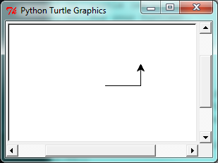

3. Hello, little turtles!¶
There are many modules in Python that provide very powerful features that we can use in our own programs. Some of these can send email, or fetch web pages. The one we’ll look at in this chapter allows us to create turtles and get them to draw shapes and patterns.
The turtles are fun, but the real purpose of the chapter is to teach ourselves a little more Python, and to develop our theme of computational thinking, or thinking like a computer scientist. Most of the Python covered here will be explored in more depth later.
3.1. Our first turtle program¶
Let’s write a couple of lines of Python program to create a new
turtle and start drawing a rectangle. (We’ll call the variable that
refers to our first turtle alex, but we can choose another
name if we follow the naming rules from the previous chapter).
When we run this program, a new window pops up:

Here are a couple of things we’ll need to understand about this program.
The first line tells Python to load a module named turtle.
That module brings us two new types that we can use:
the Turtle type, and the Screen type. The dot
notation turtle.Turtle means “The Turtle type that is defined within
the turtle module”. (Remember that Python is case sensitive, so the
module name, with a lowercase t, is different from the type Turtle.)
We then create and open what it calls a screen (we would prefer to call it
a window), which we assign to variable wn. Every window contains
a canvas, which is the area inside the window on which we can draw.
In line 3 we create a turtle. The variable alex is made to refer to this turtle.
So these first three lines have set things up, we’re ready to get our turtle to draw on our canvas.
In lines 5-7, we instruct the object alex to move, and to turn. We
do this by invoking, or activating, alex’s methods — these are
the instructions that all turtles know how to respond to.
The last line plays a part too: the wn variable refers to
the window shown above. When we invoke its mainloop method, it enters
a state where it waits for events (like keypresses, or mouse movement and clicks).
The program will terminate when the user closes the window.
An object can have various methods — things it can do — and it can also have
attributes — (sometimes called properties). For example, each turtle has
a color attribute. The method invocation
alex.color("red") will make alex red, and drawing will be red too.
(Note the word color is spelled the American way!)
The color of the turtle, the width of its pen, the position of the turtle within the window, which way it is facing, and so on are all part of its current state. Similarly, the window object has a background color, and some text in the title bar, and a size and position on the screen. These are all part of the state of the window object.
Quite a number of methods exist that allow us to modify the turtle and the window objects. We’ll just show a couple. In this program we’ve only commented those lines that are different from the previous example (and we’ve used a different variable name for this turtle):
When we run this program, this new window pops up, and will remain on the screen until we close it.
Extend this program …
- Modify this program so that before it creates the window, it prompts the user to enter the desired background color. It should store the user’s responses in a variable, and modify the color of the window according to the user’s wishes. (Hint: you can find a list of permitted color names at http://www.tcl.tk/man/tcl8.4/TkCmd/colors.htm. It includes some quite unusual ones, like “peach puff” and “HotPink”.)
- Do similar changes to allow the user, at runtime, to set
tess’ color. - Do the same for the width of
tess’ pen. Hint: your dialog with the user will return a string, buttess’pensizemethod expects its argument to be an int. So you’ll need to convert the string to an int before you pass it topensize.
3.2. Instances — a herd of turtles¶
Just like we can have many different integers in a program, we can have many turtles.
Each of them is called an instance. Each instance has its own attributes and
methods — so alex might draw with a thin black pen and be at some position,
while tess might be going in her own direction with a fat pink pen.
Here is what happens when alex completes his rectangle, and tess completes her triangle:
Here are some How to think like a computer scientist observations:
- There are 360 degrees in a full circle. If we add up all the turns that a turtle makes,
no matter what steps occurred between the turns, we can easily figure out if they
add up to some multiple of 360. This should convince us that
alexis facing in exactly the same direction as he was when he was first created. (Geometry conventions have 0 degrees facing East, and that is the case here too!) - We could have left out the last turn for
alex, but that would not have been as satisfying. If we’re asked to draw a closed shape like a square or a rectangle, it is a good idea to complete all the turns and to leave the turtle back where it started, facing the same direction as it started in. This makes reasoning about the program and composing chunks of code into bigger programs easier for us humans! - We did the same with
tess: she drew her triangle, and turned through a full 360 degrees. Then we turned her around and moved her aside. Even the blank line 18 is a hint about how the programmer’s mental chunking is working: in big terms,tess’ movements were chunked as “draw the triangle” (lines 12-17) and then “move away from the origin” (lines 19 and 20). - One of the key uses for comments is to record our mental chunking, and big ideas. They’re not always explicit in the code.
- And, uh-huh, two turtles may not be enough for a herd. But the important idea is that the turtle module gives us a kind of factory that lets us create as many turtles as we need. Each instance has its own state and behaviour.
3.3. The for loop¶
When we drew the square, it was quite tedious. We had to explicitly repeat the steps of moving and turning four times. If we were drawing a hexagon, or an octogon, or a polygon with 42 sides, it would have been worse.
So a basic building block of all programs is to be able to repeat some code, over and over again.
Python’s for loop solves this for us. Let’s say we have some friends, and we’d like to send them each an email inviting them to our party. We don’t quite know how to send email yet, so for the moment we’ll just print a message for each friend:
When we run this, the output looks like this:
Hi Joe. Please come to my party on Saturday! Hi Zoe. Please come to my party on Saturday! Hi Brad. Please come to my party on Saturday! Hi Angelina. Please come to my party on Saturday! Hi Zuki. Please come to my party on Saturday! Hi Thandi. Please come to my party on Saturday! Hi Paris. Please come to my party on Saturday!
- The variable
fin theforstatement at line 1 is called the loop variable. We could have chosen any other variable name instead. - Lines 2 and 3 are the loop body. The loop body is always indented. The indentation determines exactly what statements are “in the body of the loop”.
- On each iteration or pass of the loop, first a check is done to see if there are still more items to be processed. If there are none left (this is called the terminating condition of the loop), the loop has finished. Program execution continues at the next statement after the loop body, (e.g. in this case the next statement below the comment in line 4).
- If there are items still to be processed, the loop variable is updated to refer to the
next item in the list. This means, in this case, that the loop body is executed
here 7 times, and each time
fwill refer to a different friend. - At the end of each execution of the body of the loop, Python returns
to the
forstatement, to see if there are more items to be handled, and to assign the next one tof.
3.4. Flow of Execution of the for loop¶
As a program executes, the interpreter always keeps track of which statement is about to be executed. We call this the control flow, of the flow of execution of the program. When humans execute programs, they often use their finger to point to each statement in turn. So we could think of control flow as “Python’s moving finger”.
Control flow until now has been strictly
top to bottom, one statement at a time. The for loop changes this.
Flowchart of a for loop
Control flow is often easy to visualize and understand if we draw a flowchart.
This shows the exact steps and logic of how the for statement executes.

3.5. The loop simplifies our turtle program¶
To draw a square we’d like to do the same thing four times — move the turtle, and turn.
We previously used 8 lines to have alex draw the four sides of a square.
This does exactly the same, but using just three lines:
Some observations:
While “saving some lines of code” might be convenient, it is not the big deal here. What is much more important is that we’ve found a “repeating pattern” of statements, and reorganized our program to repeat the pattern. Finding the chunks and somehow getting our programs arranged around those chunks is a vital skill in computational thinking.
The values [0,1,2,3] were provided to make the loop body execute 4 times. We could have used any four values, but these are the conventional ones to use. In fact, they are so popular that Python gives us special built-in
rangeobjects:1 2 3 4
for i in range(4): # Executes the body with i = 0, then 1, then 2, then 3 for x in range(10): # Sets x to each of ... [0, 1, 2, 3, 4, 5, 6, 7, 8, 9]
Computer scientists like to count from 0!
rangecan deliver a sequence of values to the loop variable in theforloop. They start at 0, and in these cases do not include the 4 or the 10.Our little trick earlier to make sure that
alexdid the final turn to complete 360 degrees has paid off: if we had not done that, then we would not have been able to use a loop for the fourth side of the square. It would have become a “special case”, different from the other sides. When possible, we’d much prefer to make our code fit a general pattern, rather than have to create a special case.
So to repeat something four times, a good Python programmer would do this:
By now you should be able to see how to change our previous program so that
tess can also use a for loop to draw her equilateral triangle.
But now, what would happen if we made this change?
A variable can also be assigned a value that is a list. So lists can also be used in
more general situations, not only in the for loop. The code above could be rewritten like this:
3.6. A few more turtle methods and tricks¶
Turtle methods can use negative angles or distances. So tess.forward(-100)
will move tess backwards, and tess.left(-30) turns her to the right. Additionally,
because there are 360 degrees in a circle, turning 30 to the left will get tess facing
in the same direction as turning 330 to the right! (The on-screen animation will differ,
though — you will be able to tell if tess is turning clockwise or counter-clockwise!)
This suggests that we don’t need both a left and a right turn method — we could be
minimalists, and just have one method. There is also a backward
method. (If you are very nerdy, you might enjoy saying alex.backward(-100) to
move alex forward!)
Part of thinking like a scientist is to understand more of the structure and rich relationships in our field. So revising a few basic facts about geometry and number lines, and spotting the relationships between left, right, backward, forward, negative and positive distances or angles values is a good start if we’re going to play with turtles.
A turtle’s pen can be picked up or put down. This allows us to move a turtle to a different place without drawing a line. The methods are
Every turtle can have its own shape. The ones available “out of the box”
are arrow, blank, circle, classic, square, triangle, turtle.
We can speed up or slow down the turtle’s animation speed. (Animation controls how quickly the turtle turns and moves forward). Speed settings can be set between 1 (slowest) to 10 (fastest). But if we set the speed to 0, it has a special meaning — turn off animation and go as fast as possible.
A turtle can “stamp” its footprint onto the canvas, and this will remain after the turtle has moved somewhere else. Stamping works, even when the pen is up.
Let’s do an example that shows off some of these new features:

Be careful now! How many times was the body of the loop executed? How many turtle
images do we see on the screen? All except one of the shapes we see on the screen here
are footprints created by stamp. But the program still only has one turtle
instance — can you figure out which one here is the real tess? (Hint: if you’re not
sure, write a new line of code after the for loop to change tess’ color,
or to put her pen down and draw a line, or to change her shape, etc.)
3.7. Glossary¶
- attribute
- Some state or value that belongs to a particular object. For example,
tesshas a color. - canvas
- A surface within a window where drawing takes place.
- control flow
- See flow of execution in the next chapter.
- for loop
- A statement in Python for convenient repetition of statements in the body of the loop.
- loop body
- Any number of statements nested inside a loop. The nesting is indicated by the fact that the statements are indented under the for loop statement.
- loop variable
- A variable used as part of a for loop. It is assigned a different value on each iteration of the loop.
- instance
- An object of a certain type, or class.
tessandalexare different instances of the classTurtle. - method
- A function that is attached to an object. Invoking or activating the method
causes the object to respond in some way, e.g.
forwardis the method when we saytess.forward(100). - invoke
- An object has methods. We use the verb invoke to mean activate the
method. Invoking a method is done by putting parentheses after the method
name, with some possible arguments. So
tess.forward()is an invocation of theforwardmethod. - module
- A file containing Python definitions and statements intended for use in other
Python programs. The contents of a module are made available to the other
program by using the
importstatement. - object
- A “thing” to which a variable can refer. This could be a screen window, or one of the turtles we have created.
- range
- A built-in function in Python for generating sequences of integers. It is especially useful when we need to write a for loop that executes a fixed number of times.
- terminating condition
- A condition that occurs which causes a loop to stop repeating its body.
In the
forloops we saw in this chapter, the terminating condition has been when there are no more elements to assign to the loop variable.
3.8. Exercises¶
Write a program that prints
We like Python's turtles!1000 times.Give three attributes of your cellphone object. Give three methods of your cellphone.
- Write a program that uses a for loop to print
One of the months of the year is JanuaryOne of the months of the year is February…
Suppose our turtle
tessis at heading 0 — facing east. We execute the statementtess.left(3645). What doestessdo, and what is her final heading?Assume you have the assignment
xs = [12, 10, 32, 3, 66, 17, 42, 99, 20]- Write a loop that prints each of the numbers on a new line.
- Write a loop that prints each number and its square on a new line.
- Write a loop that adds all the numbers from the list into a variable called total.
You should set the total variable to have the value 0 before you start adding them up,
and print the value in
totalafter the loop has completed. - Print the product of all the numbers in the list. (product means all multiplied together)
Use
forloops to make a turtle draw these regular polygons (regular means all sides the same lengths, all angles the same):- An equilateral triangle
- A square
- A hexagon (six sides)
- An octagon (eight sides)
A drunk pirate makes a random turn and then takes 100 steps forward, makes another random turn, takes another 100 steps, turns another random amount, etc. A social science student records the angle of each turn before the next 100 steps are taken. Her experimental data is
[160, -43, 270, -97, -43, 200, -940, 17, -86]. (Positive angles are counter-clockwise.) Use a turtle to draw the path taken by our drunk friend.Enhance your program above to also tell us what the drunk pirate’s heading is after he has finished stumbling around. (Assume he begins at heading 0).
If you were going to draw a regular polygon with 18 sides, what angle would you need to turn the turtle at each corner?
At the interactive prompt, anticipate what each of the following lines will do, and then record what happens. Score yourself, giving yourself one point for each one you anticipate correctly:
>>> import turtle >>> wn = turtle.Screen() >>> tess = turtle.Turtle() >>> tess.right(90) >>> tess.left(3600) >>> tess.right(-90) >>> tess.speed(10) >>> tess.left(3600) >>> tess.speed(0) >>> tess.left(3645) >>> tess.forward(-100)
Write a program to draw a shape like this:

Hints:
- Try this on a piece of paper, moving and turning your cellphone as if it was a turtle. Watch how many complete rotations your cellphone makes before you complete the star. Since each full rotation is 360 degrees, you can figure out the total number of degrees that your phone was rotated through. If you divide that by 5, because there are five points to the star, you’ll know how many degrees to turn the turtle at each point.
- You can hide a turtle behind its invisibility cloak if you don’t want it shown. It will still
draw its lines if its pen is down. The method is invoked as
tess.hideturtle(). To make the turtle visible again, usetess.showturtle().
Write a program to draw a face of a clock that looks something like this:

Create a turtle, and assign it to a variable. When you ask for its type, what do you get?
What is the collective noun for turtles? (Hint: they don’t come in herds.)
What the collective noun for pythons? Is a python a viper? Is a python venomous?